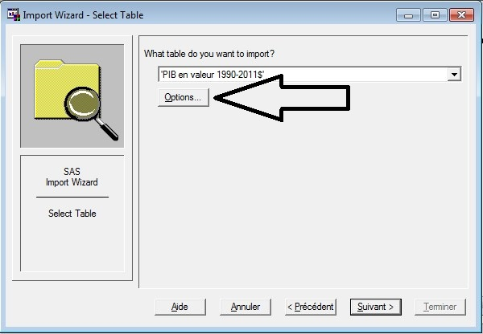
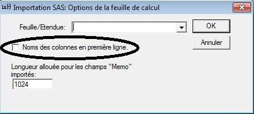

An Excel file must be prepared before importing
It is extremely rare to find databases that are formatted for SAS just extracted
The first line of the file can contain the variable names
The names of variables in SAS have specificities that must ALWAYS be observed
Variable names are 32 characters maximum
The names are composed of letters not accentuated , possibly of numbers and the symbol "_"
Any other special character should be avoided (@, space | $ £! ...)
Variable names must never start with a number
Variable names must be unique per table
By default, the wizard uses the first row to define the column names
To signal the absence of variable names in the first line to SAS, two actions depending on the import mode must be operated
When selecting the sheet to import described in the introductory course, you must go to the options
Then uncheck the default option of "Column names in first row"
In the proc import described in the introductory course, you should assign the value NO to the GETNAMES option
In this case the variables will be named \[(F_1, ..., F_n) \], with n the number of non-empty columns in the imported file
Each line must correspond to an individual
It is advisable to be vigilant on the presence of sub-totals or of total in a table, SAS will interpret it as a individual to full part
It is common to be confronted with missing observations in a database
SAS handles missing values differently depending on whether the variable is numeric or alphanumeric
A missing numeric variable will be identified by a.
A missing alphanumeric variable will be identified by "", or ""
A missing numeric variable will always be the smallest value of a numeric variable
Thus a "less than or equal" condition will always be respected by a missing value and will not always be desirable
The modalities must not respect the same rules as the names of variables
However, they present their own rules which should be respected otherwise there will be a problem when importing
Most of the time, import problems are not reported by the system and are discovered after several treatments
The greatest caution should be observed because the import is a crucial step that should not be underestimated
The main characteristic to be careful with is the format and more particularly the length of the variables
Although a numeric variable is by default defined as a variable of size 8 (the largest possible on SAS), the length of alphanumeric variables is by default defined as the length of the longest character string of a variable during import
This can lead to the truncation problems described in the introduction when concatenating tables or change of terms
If a transposition is necessary, the modalities become variables and must respect the rules described more top
You should therefore avoid modalities that contain spaces or other special characters in this contingency
Either the product-interieur-brut-reg-1990-2011.xls excel file
New version: PIB_1990_2015_regions_diffusion.xls
Open the file (GDP in 1990-2015 tab) and
explain why the file format is not suitable for import under SAS
After the correction, the product-interieur-brut-reg-1990-2015 formatted.xls file can be imported
Définir la librairie Prelim qui servira à stocker la table à importer
The log returns the following note if the program was written correctly
PRELIM.PIB_REG was successfully created.
The table is then stored in the Prelim library and is accessible from the Explorer tab
You should always check that the import went well by opening the database after the import